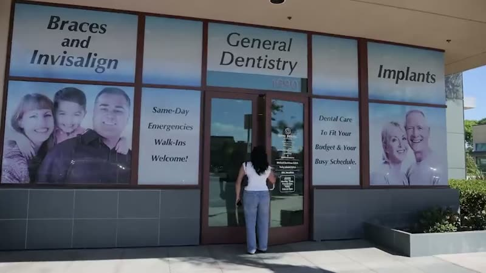
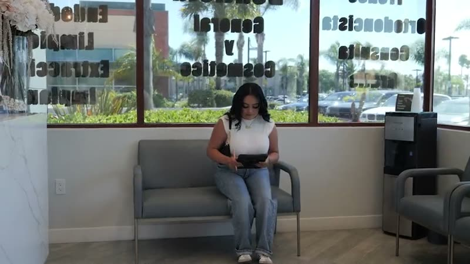
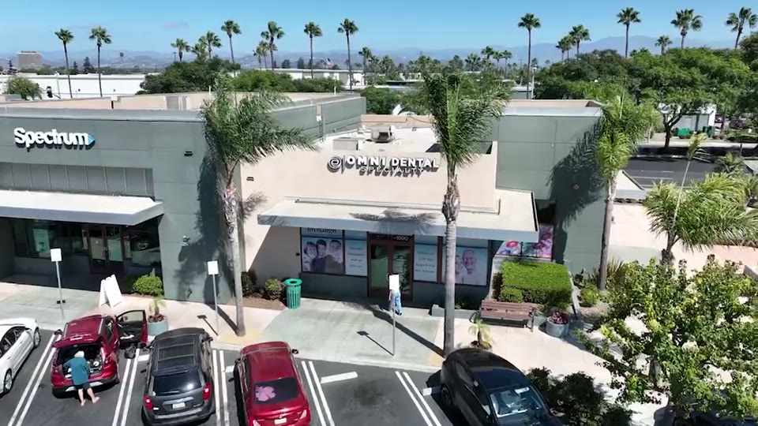

Dental Implants
Titanium implants that replace missing teeth with stable, natural-looking restorations.
Dental Implants for Nyeland AcresWisdom teeth, Nyeland Acres
Wisdom teeth do not always cause trouble, but some stay stuck under the gum or grow in the wrong way. Our only office, 1690 E. Gonzales Road, Oxnard, sees patients from Nyeland Acres for wisdom teeth exams. Dr. Keihani takes an X-ray and goes over the options with you before anything is decided.
If you believe you are experiencing a medical emergency, call 911 or go to the nearest emergency room.
Your third molars
These third molars tend to arrive in late adolescence or when you are a young adult. They are called wisdom teeth because they form at a more grown-up age than the others.
Some people never have trouble with them, but many run into problems because the jaw is short on room or the teeth erupt the wrong way, and that can bother the teeth and tissue around them.
A wisdom tooth that stays trapped can sit at more than one angle. It may lean toward the front of the mouth, or stand straight while still hidden under the gum (opens in a new tab), as the diagram shows.
If you live in Nyeland Acres, north of the city, and something feels wrong at the back of your mouth, call (805) 366-6000 to ask about a wisdom teeth exam.
Step by step
Dr. Keihani prioritizes patient comfort and safety during the extraction process.
The dentist examines your mouth and takes an X-ray before deciding on treatment. Tell your dentist about any pain or changes you have noticed.
You and your dentist discuss the course of treatment together. Options range from removal to watching the teeth over time, which is called active surveillance.
Common reasons for removing a tooth include impacted teeth that are causing problems, such as wisdom teeth. Deep infection, overcrowding and gum disease are other reasons.
Tooth removal starts with a local anesthetic that numbs the area. The tooth is then loosened and taken out. Contact the dental office with questions about this step.
Expect the socket itself to need 1 to 2 weeks, with the nearby bone and tissue sometimes healing more slowly. Leave straws alone for at least 24 hours. The Cleveland Clinic notes that suction from drinking through a straw can dislodge the blood clot (opens in a new tab), and it suggests skipping straws for a week.

Caring for wisdom teeth
Before you talk with a dentist about wisdom teeth, a few general points can help. Which ones apply is a question for your visit. Every service open to Nyeland Acres patients is listed further down this page.
What we offer
Nyeland Acres patients can come to our one office in Oxnard for wisdom teeth care, gum treatment, exams and more.
Titanium implants that replace missing teeth with stable, natural-looking restorations.
Dental Implants for Nyeland Acres
Porcelain veneers, dental bonding, teeth whitening and smile makeovers.
Cosmetic Dentistry for Nyeland Acres
Clear aligners that straighten teeth gradually, without metal brackets.
Invisalign for Nyeland Acres
Exams, dental crowns and root canals for patients from youngsters to seniors.
General Dentistry for Nyeland Acres
Prompt, compassionate emergency dental care to address your pain.
Emergency Dentistry for Nyeland Acres
Treatment that saves a damaged tooth by cleaning out the pulp.
Root Canal for Nyeland Acres
A tooth-shaped cap that restores the shape, size, strength and appearance of a damaged tooth.
Dental Crowns for Nyeland Acres
Scaling and root planing, gum grafting and other treatment for gum disease.
Gum Care for Nyeland Acres
Whitening treatments, including custom at-home whitening kits.
Teeth Whitening for Nyeland Acres
Custom night guards and splints to protect your teeth and jaw.
TMJ Therapy for Nyeland AcresOur approach
You and your dentist discuss the course of treatment together
Your extraction
Dr. Keihani prioritizes patient comfort and safety during the extraction process.
For fully erupted wisdom teeth, a simple extraction technique is used to loosen and remove the tooth. For impacted wisdom teeth, a small incision is made in the gum to access and remove the tooth.
The procedure begins with a local anesthetic to numb the area. Nitrous oxide is available for added relaxation, and IV sedation can be provided upon request, depending on your needs.
Aftercare
Arrange for a friend or family member to drive you home, as you’ll still be recovering from anesthesia.
Keep gauze in place for at least 30 minutes, or up to a day if needed.
Use ice packs to minimize swelling, and your provider may prescribe steroids if necessary.
Over-the-counter pain medication is typically sufficient, though stronger painkillers may be prescribed for surgical extractions.
Rinse with warm salt water 24 hours after the procedure to keep the sockets clean and moist. Brush and floss carefully, avoiding the extraction site.
Why patients choose us
One office on E. Gonzales Road for routine care, smile makeovers and tooth replacement, led by Dr. Kourosh Keihani, DDS.
Patients rate the practice Excellent, based on 614 Google reviews.
Book Online (opens in a new tab)The Oxnard office uses a CT scan, an intraoral camera, digital X-rays and an aerosol machine.
The CT scan is used for CT-guided implant placement.
Omni Dental Specialty accepts Denti-Cal, most PPO plans and HMOs.
Call before your visit to ask about your plan, or about financing.
The office is open for emergency dental appointments, for tooth pain and other urgent problems.
Call (805) 366-6000 to arrange a visit.
General, restorative and cosmetic dentistry for patients from youngsters to seniors.
From exams and crowns to implants, veneers and Invisalign, under one roof at 1690 E. Gonzales Road.
Patient reviews
Dr. Keihani is an excellent dentist, experienced and talented to give solutions to my varied dental needs. I’m very thankful His staff is also very friendly and helpful. A well-run clinic.
“Waiting time was 5mins, office staff friendly, doctor let you know what’s going on, and Alijah is happy! That’s what counts to me!!!”
“I had very a good experience at Omni Dental. The staff is very friendly and caring. I highly recommend this office for dental treatment.”
“Such a great attitude, attention, atmosphere, you can’t ask for more!”
“Crystal is very professional and curtious I highly recommend her as a hygenist office staff nice.”
“The doctor was excellent the owner of the company very knowledgeable very experienced very hospitable he really knows his dental work very affordable I would recommend him to every person go see this doctor doctor that Omni dental Office”
Questions
Call (805) 366-6000 or book your appointment online today.
While some people experience no issues with their wisdom teeth, many others face complications due to lack of space or improper eruption, which can affect surrounding teeth and tissues. Removing problematic wisdom teeth can help prevent pain, infection, and long-term complications.
Wisdom teeth remain trapped beneath the gums or partially erupt. For impacted wisdom teeth, a small incision is made in the gum to access and remove the tooth.
The procedure begins with a local anesthetic to numb the area. Nitrous oxide is available for added relaxation, and IV sedation can be provided upon request, depending on your needs.
Arrange for a friend or family member to drive you home, as you’ll still be recovering from anesthesia.
Keep gauze in place for at least 30 minutes, or up to a day if needed.
Rinse with warm salt water 24 hours after the procedure to keep the sockets clean and moist. Brush and floss carefully, avoiding the extraction site.
No. It is an unincorporated community of Ventura County, outside the city limits.
The dental office, at (805) 366-6000. Insurance plans, payment options, fees and new patient forms are all questions for the office itself.
Visit us

Visit us
1690 E. Gonzales Road, Oxnard, CA 93036
Monday to Thursday, 9am to 5pm
Friday, 9am to 4pm